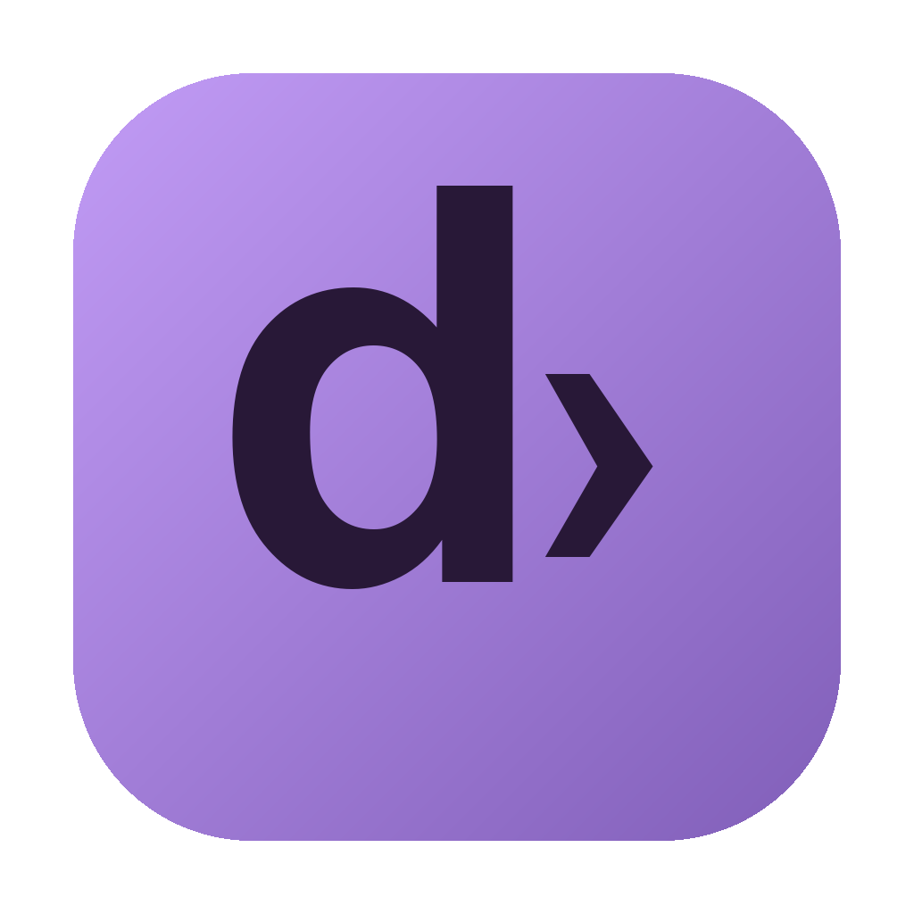

01 / Le tue applicazioni2 app
Controllo delle release in corso…
| Applicazione | Stato | Installata | Ultima release | Azioni |
|---|
Nessuna app in questa sezione.

iDomControllo delle release in corso…
| Applicazione | Stato | Installata | Ultima release | Azioni |
|---|
Nessuna app in questa sezione.